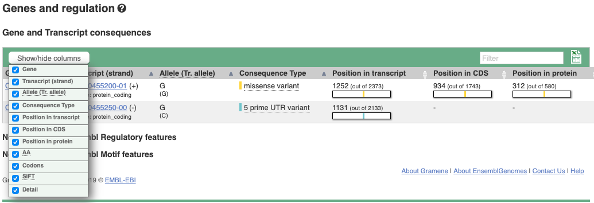
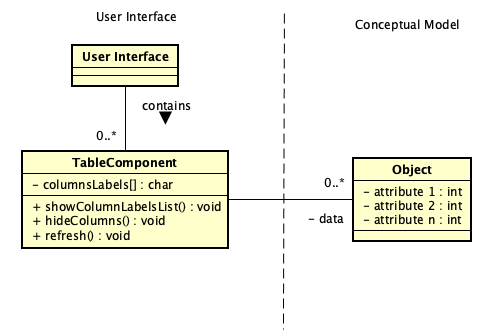
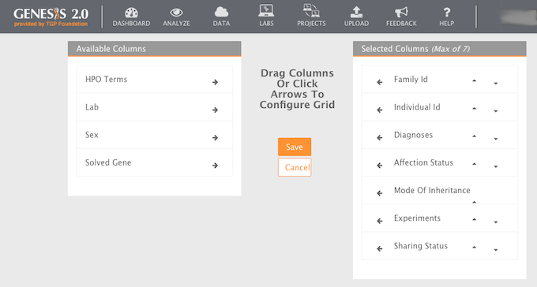

Columnas ocultas
Alias:ninguno
Nivel de significancia: ***

Fig. 1 Representación tabular de información genética con la opción para mostrar o ocultar las columnas del conjunto de datos. Fuente: Sitio web Gramene [1].
Problema
Contexto
La presentación tabular de datos de las entidades genéticas (variaciones, genes, cromosomas, etc) requiere multitud de columnas debido a la cantidad de características relacionadas a cada entidad genética. La cantidad de columnas sobrecarga el espacio de análisis y hace compleja la navegación y la comparación de información. El usuario generalmente está interesado en no más de 7 columnas para llevar a cabo su análisis.
Solución
Proveer, al componente Tabla de la interfaz de usuario, una opción para mostrar la lista de columnas de la tabla con sus respectivos nombres. Es recomendable presentar por cada columna, el nombre de la columna y su definición/significado. Sobre la lista de columnas, el usuario debe poder configurar/indicar las columnas que deben ser visibles o ocultas en la tabla. Una vez guardada la configuración, la tabla deber refrescar su estado ocultando las columnas que se configuraron como ocultas.
Estructura

Patrones relacionados
Asociación: ninguna
Agregación: ninguna
Especialización: ninguno
Ejemplos
La figura 1 de la portada de este patrón muestra la tabla de información de los genes en multitud de columnas. El patrón Columnas Ocultas ha sido implementado para seleccionar las columnas que deben ser visibles o ocultas. El botón “Show/hide columns” despliega la lista de columnas disponibles en la tabla. La figura 1 ha sido obtenida del sitio web Gramene [1], un sitio web basado en el sitio e!Ensembl [2] pero específico para datos de mapeo comparativo para el arroz y especies de pastos relacionados.
La figura 2 muestra la interfaz de GENESES 2.0 [3] donde se implementa el patrón Columnas Ocultas para configurar la visualización de columnas de una tabla que presenta el información de estudios genéticos caracterizados por varios atributos que se muestran en los paneles “Available Columns” y “Selected Columns”. El panel “Available Columns” contiene las columnas que actualmente están ocultas al usuario. El panel “Selected Columns” contiene las columnas que actualmente están visibles al usuario. Para visualizar una columna oculta, el usuario debe seleccionar y arrastrar una columna del panel “Available Columns” y soltarla en el panel “Selected Columns”.

Fig. 2 Interfaz de configuración de tabla de la aplicación GENESIS 2.0 [3].
Bibliografía